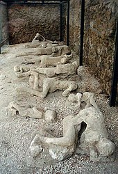

Det fins egentlig ikke en konsensus hos vulkanologer om hvordan man skal definere en «aktiv» vulkan. Levetiden til en vulkan kan variere fra måneder til flere millioner år og slike karakteristikker kan oppfattes som meningsløse sammenlignet med levetiden til menneske eller til og med sivilisasjoner. For eksempel har mange av Jordas vulkaner hatt mange utbrudd de siste par tusen årene, men mange viser ikke for tiden tegn på utbrudd. Med tanke på den lange levetiden til slike vulkaner er de svært aktive. I løpet av et menneskeliv er de derimot ikke særlig aktive.
Forskere regner vanligvis en vulkan som aktiv om den er i utbrudd eller viser tegn på uro, som uvanlig jordskjelvaktivitet eller vesentlige gassutslipp. Mange forskere regner også en vulkan som aktiv om den har hatt utbrudd i historisk tid. Det er viktig å merke seg at lengden på historisk tid varierer fra region til region, i middelhavsområdet mer enn 3000 år bakover i tid, men på Hawaii bare litt mer enn 200 år. Smithsonian Global Volcanism Programs definisjon for en aktiv vulkan er at den har hatt utbrudd i løpet av de siste 10 000 år.
Sovende vulkaner er de som ikke er aktive nå for tiden (som definert over), men kan bli aktive eller få nye utbrudd igjen. Det hender likevel ofte at vulkaner som forskere regner som aktive blir omtalt som sovende av ikke-fagpersoner eller i media.
Utdødde vulkaner er de som forskerne ikke regner med vil få utbrudd igjen. Om en vulkan virkelig er utdødd eller ikke er ofte vanskelig å avgjøre. Siden kalderaen til «supervulkaner» kan ha en utbruddssyklus på millioner av år kan en kaldera som ikke har hatt utbrudd på titusenvis av år regnes som sovende og ikke utdødd. Yellowstone Caldera i Yellowstone n